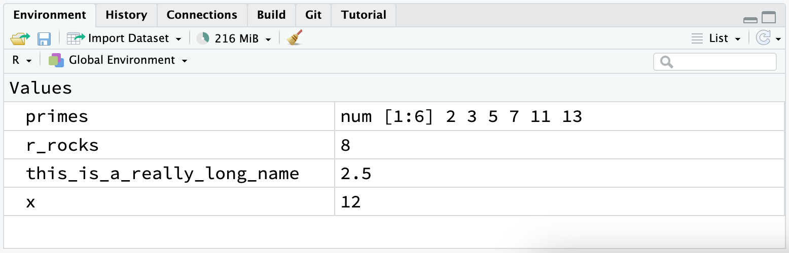

1 / 200 * 30 #> [1] 0.15 (59 + 73 + 2) / 3 #> [1] 44.66667 sin(pi / 2) #> [1] 1
You now have some experience running R code. We didn’t give you many details, but you’ve obviously figured out the basics, or you would’ve thrown this book away in frustration! Frustration is natural when you start programming in R, because it is such a stickler for punctuation, and even one character out of place will cause it to complain. But while you should expect to be a little frustrated, take comfort in that this experience is both typical and temporary: it happens to everyone, and the only way to get over it is to keep trying.
Before we go any further, let’s make sure you’ve got a solid foundation in running R code, and that you know about some of the most helpful RStudio features.
Let’s review some basics we’ve so far omitted in the interests of getting you plotting as quickly as possible. You can use R as a calculator:
1 / 200 * 30 #> [1] 0.15 (59 + 73 + 2) / 3 #> [1] 44.66667 sin(pi / 2) #> [1] 1
You can create new objects with the assignment operator <-:
x <- 3 * 4
You can combine multiple elements into a vector with c():
primes <- c(2, 3, 5, 7, 11, 13)
And basic arithmetic is applied to every element of the vector:
primes * 2 #> [1] 4 6 10 14 22 26 primes - 1 #> [1] 1 2 4 6 10 12
All R statements where you create objects, assignment statements, have the same form:
object_name <- value
When reading that code, say “object name gets value” in your head.
You will make lots of assignments and <- is a pain to type. You can save time with RStudio’s keyboard shortcut: Alt + - (the minus sign). Notice that RStudio automatically surrounds <- with spaces, which is a good code formatting practice. Code is miserable to read on a good day, so giveyoureyesabreak and use spaces.
Object names must start with a letter, and can only contain letters, numbers, _ and .. You want your object names to be descriptive, so you’ll need to adopt a convention for multiple words. We recommend snake_case where you separate lowercase words with _.
i_use_snake_case otherPeopleUseCamelCase some.people.use.periods And_aFew.People_RENOUNCEconvention
We’ll come back to names again when we talk more about code style in #chp-workflow-style.
You can inspect an object by typing its name:
x #> [1] 12
Make another assignment:
this_is_a_really_long_name <- 2.5
To inspect this object, try out RStudio’s completion facility: type “this”, press TAB, add characters until you have a unique prefix, then press return.
Ooops, you made a mistake! The value of this_is_a_really_long_name should be 3.5, not 2.5. Use another keyboard shortcut to help you fix it. Type “this” then press Cmd/Ctrl + ↑. Doing so will list all the commands you’ve typed that start with those letters. Use the arrow keys to navigate, then press enter to retype the command. Change 2.5 to 3.5 and rerun.
Make yet another assignment:
r_rocks <- 2 ^ 3
Let’s try to inspect it:
r_rock #> Error: object 'r_rock' not found R_rocks #> Error: object 'R_rocks' not found
This illustrates the implied contract between you and R: R will do the tedious computations for you, but in exchange, you must be completely precise in your instructions. Typos matter; R can’t read your mind and say “oh, they probably meant r_rocks when they typed r_rock”. Case matters; similarly R can’t read your mind and say “oh, they probably meant r_rocks when they typed R_rocks”.
R has a large collection of built-in functions that are called like this:
function_name(arg1 = val1, arg2 = val2, ...)
Let’s try using seq(), which makes regular sequences of numbers and, while we’re at it, learn more helpful features of RStudio. Type se and hit TAB. A popup shows you possible completions. Specify seq() by typing more (a q) to disambiguate, or by using ↑/↓ arrows to select. Notice the floating tooltip that pops up, reminding you of the function’s arguments and purpose. If you want more help, press F1 to get all the details in the help tab in the lower right pane.
When you’ve selected the function you want, press TAB again. RStudio will add matching opening (() and closing ()) parentheses for you. Type the arguments 1, 10 and hit return.
seq(1, 10) #> [1] 1 2 3 4 5 6 7 8 9 10
Type this code and notice that RStudio provides similar assistance with the paired quotation marks:
x <- "hello world"
Quotation marks and parentheses must always come in a pair. RStudio does its best to help you, but it’s still possible to mess up and end up with a mismatch. If this happens, R will show you the continuation character “+”:
> x <- "hello
+The + tells you that R is waiting for more input; it doesn’t think you’re done yet. Usually, this means you’ve forgotten either a " or a ). Either add the missing pair, or press ESCAPE to abort the expression and try again.
Note that the environment tab in the upper right pane displays all of the objects that you’ve created:

Why does this code not work?
my_variable <- 10 my_varıable #> Error in eval(expr, envir, enclos): object 'my_varıable' not found
Look carefully! (This may seem like an exercise in pointlessness, but training your brain to notice even the tiniest difference will pay off when programming.)
Tweak each of the following R commands so that they run correctly:
libary(tidyverse) ggplot(dota = mpg) + geom_point(maping = aes(x = displ, y = hwy))
Press Alt + Shift + K. What happens? How can you get to the same place using the menus?
Now that you’ve learned a little more about how R code works, and some tips to help you understand your code when you come back to it in the future. In the next chapter, we’ll continue your data science journey by teaching you about dplyr, the tidyverse package that helps you transform data, whether it’s selecting important variables, filtering down to rows of interest, or computing summary statistics.
Comments
R will ignore any text after
#. This allows to you to write comments, text that is ignored by R but read by other humans. We’ll sometimes include comments in examples explaining what’s happening with the code.Comments can be helpful for briefly describing what the subsequent code does.
With short pieces of code like this, it might not be necessary to leave a command for every single line of code. But as the code you’re writing gets more complex, comments can save you (and your collaborators) a lot of time in figuring out what was done in the code.
Use comments to explain the why of your code, not the how or the what. The what and how of code your is always possible to figure out, even if it might be tedious, by carefully reading the code. But if you describe the “what” in your comments and your code, you’ll have to remember to carefully update the comment and code in tandem. If you change the code and forget to update the comment, they’ll be inconsistent which will lead to confusion when you come back to your code in the future.
Figuring out why something was done is much more difficult, if not impossible. For example,
geom_smooth()has an argument calledspan, which controls the smoothness of the curve, with larger values yielding a smoother curve. Suppose you decide to change the value ofspanfrom its default of 0.75 to 0.3: it’s easy for a future reader to understand what is happening, but unless you note your thinking in a comment, no one will understand why you changed the default.For data analysis code, use comments to explain your overall plan of attack and record important insight as you encounter them. There’s no way to re-capture this knowledge from the code itself.